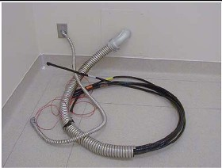
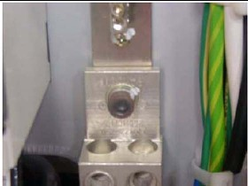
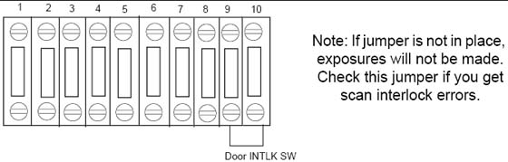

Operating Documentation
Direction 5193574-800, Rev# 22
LightSpeed 7.X Service Methods
Module Version 1.0, Version Date 4/22/10
Operating Documentation |
| Required Persons | Preliminary Reqs | Procedure | Finalization |
|---|---|---|---|
| 1 Customer Electrician |
| Item | Qty | Effectivity | Part# | Manufacturer | |
|---|---|---|---|---|---|
| Hex wrench set | 1 | - | - | - | |
| ||||
| LOCKOUT/TAGOUT IS REQUIRED BEFORE PERFORMING THIS TASK. USE THE SUPPLIED LOTO KIT. | ||||
| ALL INSTALLATION WORK WITHIN THIS SECTION ON THE POWER DISTRIBUTION UNIT SHOULD BE COMPLETED BY A LICENSED ELECTRICIAN ONLY. | ||||
| NOTE: | Connecting the primary incoming power is performed by the customer’s electrical contractor. The electrician needs to provide a reducing bushing to attach the flexible conduit to the PDU |
Roll the PDU into position on its permanently mounted casters. Leave at least 15.5 cm (6 in.) between the PDU and back wall to allow cooling air to circulate.
Table 1: Contractor Connections
| Connection or Wall Box | AWG # | Connection From | Connection To PDU | Installed & Checked |
| TS1 | #1 | PDB-A | TS1-1 | |
| #1 | PDB-B | TS2-2 | ||
| #1 | PDB-C | TS3-3 | ||
| #1/0 | GND | N/G (Do NOT connect anything to neutral point.) |
Table 2: Power Wire Torque Values
| Wire Size AWG | Driver | Bolt/Hex |
| #18 - 16 | 1.67 ft-lb (2.3 N-m) | 6.25 (8.5 N-m) |
| #14 - 8 | 1.67 ft-lb (2.3 N-m) | 6.25 (8.5 N-m) |
| #6 - 4 | 3.0 ft-lb (4.1 N-m) | 12.5 (17 N-m) |
| #0 - 2/0 | N/A | 29 ft-lb (39.3 N-m) |
Run the main input power conductors and ground though flexible metal conduit (attached between the PDU chassis and room duct-work) so you can move the PDU away from the wall during service.
Illustration 1: Flexible Conduit for PDU Power

Locate the hole cover plate in Box 1 and attach the flexible metal conduit to the PDU.
If present, remove the TS1 panel front cover.
Strip the wires to fit securely on the power block.
Observe incoming phases (L1, L2, and L3) and insert bare leads into power block.
Insert vault ground into PDU vault ground lug.
Tighten all fasteners securely and replace the TS3 front panel.
Illustration 2: PDU Area Locations

Illustration 3: PDU Power Connections

| ||||
| WORK WITH THE ELECTRICAL CONTRACTOR TO BE SURE EXTERNAL POWER SOURCE IS TURNED OFF. | ||||
Connect the ground wire (green with a yellow stripe) from the table/gantry raceway ground bus to the system ground lug in the PDU.
Illustration 4: PDU System Ground Connection

Table 3: Contractor PDU Connections
| CONNECTION OR WALL BOX | AWG # | CONNECTION FROM | CONNECTION TO PDU | INSTALLED AND CHECKED |
| A1 | #1 #1 #1 #1/0 | Load - T1 Load - T2 Load - T3 GND | TS-1 L1 TS-1 L2 TS-1 L3 TS-1 GND (Do NOT connect anything to neutral point.) | |
| WL (Warning light) | #14 #14 #14 #14 #14 #14 #14 #14 | LV Source -1 LV Source -2 X-Ray ON Light -1 X-Ray ON Light -2 Sys-ON Light -1 Sys-ON Light -2 Ready Light -1 Ready Light -2 | TS6 1 TS6 2 TS6 3 TS6 4 TS6 5 TS6 6 TS6 7 TS6 8 | |
| DS (Scan Room Door Switch) | #14 #14 | Door SW-1 Door SW-2 | TS6 9 TS6 10 |
Warning light is controlled by signals from the system.
This step is site-specific. The PDU by default is configured for no external warning light connection. If you have external warning lights, see Illustration 5 for proper connection.
Illustration 5: Typical TS6 Warning Light & Door Interlock Connections

It is recommended that you use the four (4) wire method of adding an x-ray warning light to a room, as shown in Illustration 5. When using this method, you:
Minimize EMC interference.
Increase contact life of the relay used in the PDU.
| ||||
| WARNING: If a door interlock is used, remove the jumper (terminals 9 and 10). | ||||
Door interlocks are used to prevent x-rays from being generated when the scan room door is open.
The door interlock circuitry in the PDU is shipped from the factory engaged. This means the system cannot generate x-ray until disengaged. A short must exist between pins 9 & 10 for x-ray to be generated. Using a small piece of wire, short pins 1 and 2 together. See Illustration 6.
This is a dry (No Power) contactor for use by a door interlock.
| NOTE: | This should be wired according to local code. |
Illustration 6: Without a Door Interlock

To use the system with a door interlock, wire a normally open switch between pins 1 & 2 that is attached to the interlock.
Illustration 7: With a Door Interlock

No finalization steps.